Exploring Jaeger - Rancher k3s prerequisites
This lab only reads trace data, so all you need is Jaeger reachable in your browser. It requires
Rancher Desktop with the Kubernetes (k3s)
engine enabled and
kubectl on your PATH. If Rancher Desktop is not already running from
the previous lab, start it with rdctl start and wait for the status indicator to
turn green.
Note: If the
jaeger pod and its port-forward are still up from lab 3, and you already have
traces in it, skip the next two slides and carry straight on.
Exploring Jaeger - Start Jaeger on k3s
Jaeger comes from a public registry, so k3s pulls it for you - there is nothing to side-load here and
no
--image-pull-policy=Never. OTLP is enabled by default in Jaeger v1.76, but we set it
explicitly so the intent is visible:
$ kubectl delete pod jaeger --ignore-not-found
$ kubectl run jaeger --image=jaegertracing/all-in-one:1.76.0 \
--port=16686 --env="COLLECTOR_OTLP_ENABLED=true"
pod/jaeger created
$ kubectl wait --for=condition=Ready pod/jaeger --timeout=180s
pod/jaeger condition met
The
kubectl wait matters: without it the next step can fail with "unable to forward port
because pod is not running".
Exploring Jaeger - Forward the Jaeger ports
Forward the UI port so the screenshots in this lab match what you see, and the collector port so you can generate fresh traces by re-running the lab 3 application on your host. Every
http://localhost:16686 link in the slides that follow works unchanged:
$ kubectl port-forward pod/jaeger 16686:16686 4317:4317
Forwarding from 127.0.0.1:16686 -> 16686
Forwarding from 127.0.0.1:4317 -> 4317
Leave this running in its own terminal for the rest of the lab.
Exploring Jaeger - Generate trace data
With the port-forward running, start the lab 3 application on your host in a second terminal. It
exports over OTLP to
localhost:4317, which the forward carries into the pod:
$ java -jar target/java-programatic-instrumentation-demo-1.0-SNAPSHOT-with-dependencies.jar
Now generate a spread of traces, because several slides in this lab compare traces against each
other:
Note: Lab 3 only instrumented
handleIndex and
handleDoggoGet, so /rolldice produces no spans - don't go
looking for it in the UI.
Exploring Jaeger - Tooling overview
Jaeger is an open source distributed tracing system and CNCF graduated project that
supports multiple storage backends and a web interface.

Exploring Jaeger - Unpacking the all-in-one
Jaeger natively supports receiving telemetry via OTLP, the OpenTelemetry Protocol which is
powering our examples. Instead of a storage backend we're storing trace data in-memory:
- jaeger-collector:
- receives, processes, and sends traces to storage
- jaeger-query:
- exposes APIs for retrieving traces from storage
- hosts a web UI
Exploring Jaeger - Searching through traces
The first page you land on in Jaeger at
http://localhost:16686 is the Traces page
with a search panel. This is where you can filter to look at traces with a specific service, a
particular operation, relevant tags (e.g. status http.status_code=500), duration or any
combination of the above:
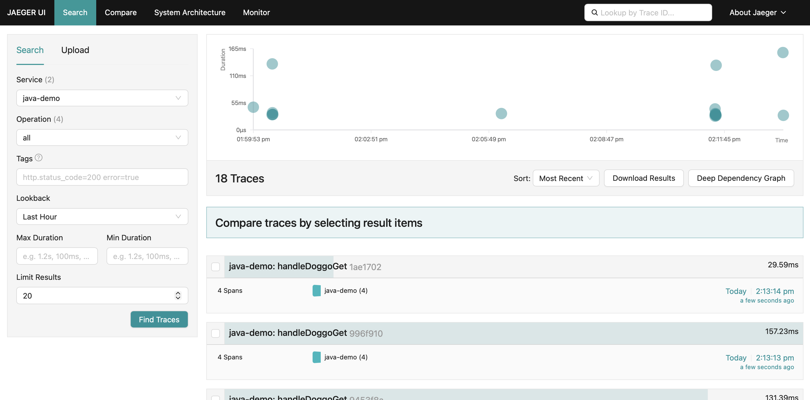
Exploring Jaeger - Exploring search results
Traces matching the search query populate a scatter plot and a table. The scatter plot is a
quick way to visually identify traces that look out of the ordinary and by clicking on the
bubble you'll be taken straight to the corresponding trace waterfall. The table view is helpful
for sorting to find specific traces by duration, amount of spans or recency:
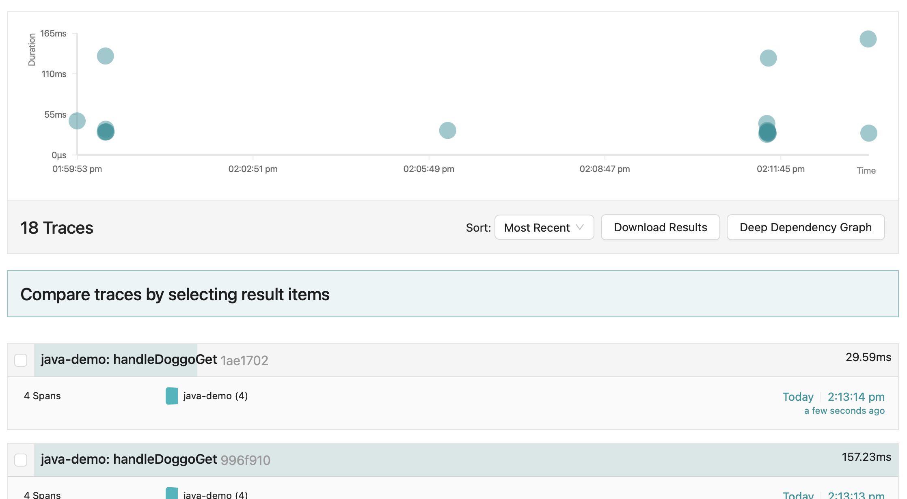
Exploring Jaeger - More trace details
Traces can feature 100s of services and 1000s of spans so the default view is to have all span
details collapsed to show the fullest picture of the request with quick stats about the trace
like duration and number of services. From this view you can see what spans are taking up the
most time relative to the overall request duration:
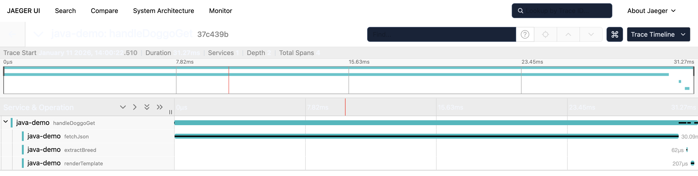
Exploring Jaeger - Search bar for trace details
The search bar allows you to search within the trace for spans with properties like "GET", "200", etc. Clicking the target opens up
the matching spans:
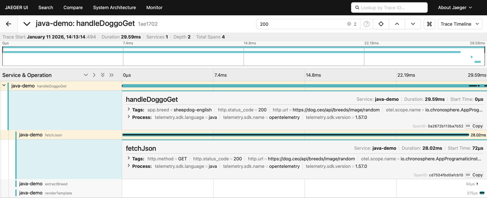
Exploring Jaeger - A trace scatter plot
The scatter plot is a quick way to visually identify traces that look out of the ordinary and
by clicking on the bubble you'll be taken straight to the corresponding trace waterfall. The
table view is helpful for sorting to find specific traces by duration, amount of spans or
recency:
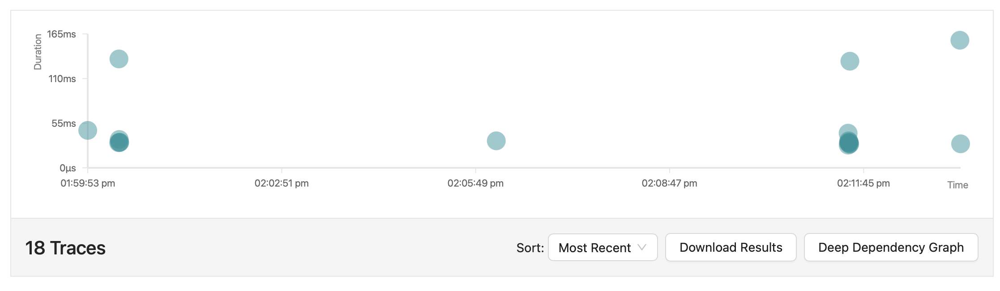
Exploring Jaeger - Leveraging a trace table
The table view is helpful for sorting to find specific traces by duration, amount of spans or
recency. Clicking on the trace name takes you to its trace waterfall page and selecting 2 or
more checkboxes lets you compare the selected traces with each other:
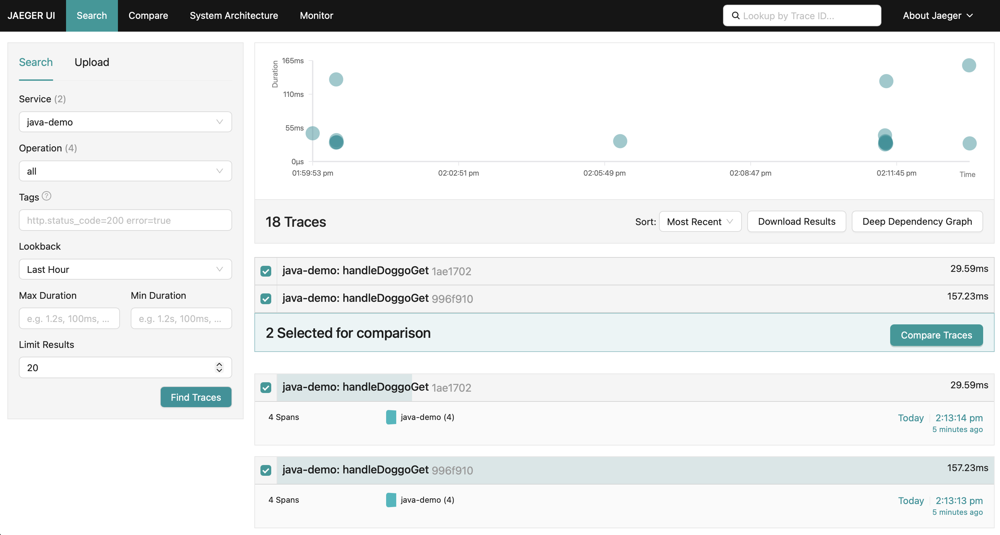
Exploring Jaeger - A single span
When you've zeroed in on an "interesting" span, clicking the name opens up more details like the
associated tags and process information. This is where your manually instrumented metadata
becomes a powerful way to inspect your system behavior:
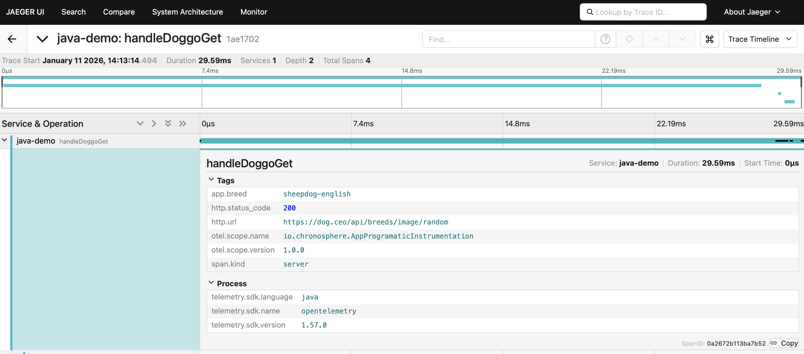
Exploring Jaeger - Additional trace visualizations
Other helpful trace visualizations are found in the drop-down next to the trace search bar. They
include:
- Graph
- Spans Table
- Flamegraph
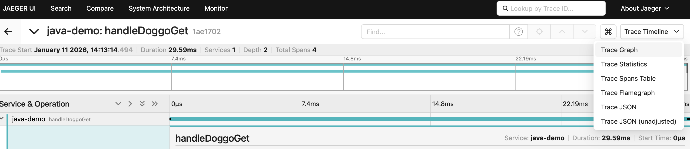
Exploring Jaeger - The graph view
The graph view shows the trace with spans grouped into node blocks with options to color the
nodes uniquely by service, by Time to highlight the critical path, or Self Time which shows the
longest span durations not waiting on children:
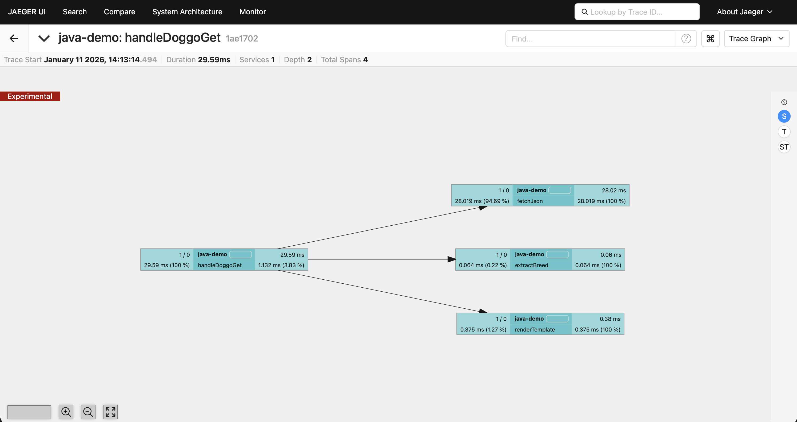
Exploring Jaeger - The spans table
This view shows a table with duration, operation and service name per span in the trace. The
option to search by service or operation lets you hone in on specific interactions. Clicking a
span ID takes you to the Trace Detail view with that span highlighted:
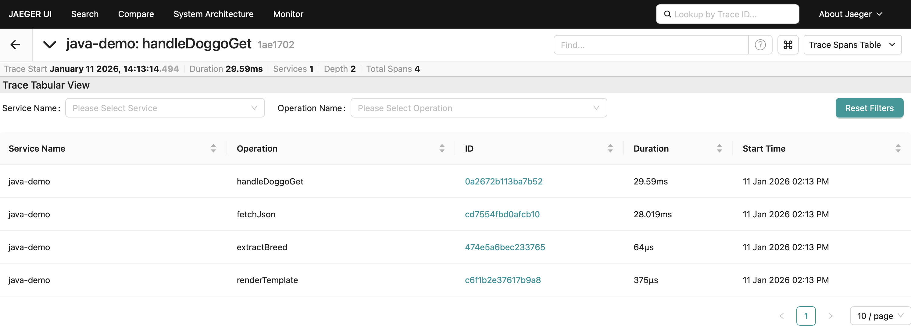
Exploring Jaeger - The flamegraph view
Flamegraph is another way to visualize the trace waterfall. As you explore the spans you can
right-click to collapse unnecessary details, copy the function name to use in another query or
highlight similar spans within the trace:
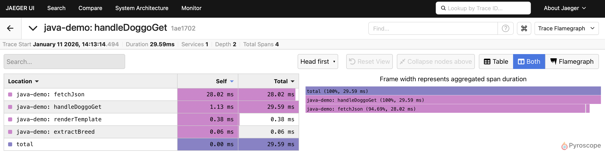
Exploring Jaeger - Comparing traces for change
When new bugs pop up or unexpected behavior occurs, your investigation typically tries to answer,
"What changed?" or "How does this compare to normal?" This is where trace comparison shines! Let's
use this to compare two traces to quickly identify why one request to
/doggo
takes +157ms and another only 28ms?
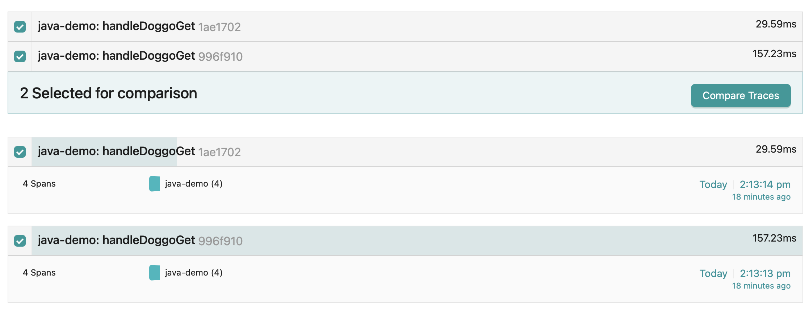
Exploring Jaeger - Trace comparison in detail
Colors are modeled after code diffs; gray for nodes in both Trace A and Trace B, red
for nodes only in Trace A, and green for nodes only in Trace B. Look for the culprit.
The timing difference you're seeing is normal as the first request is likely slow due
to JVM class loading/JIT warmup, DNS resolution for dog.ceo, or initial HTTP connection
establishment
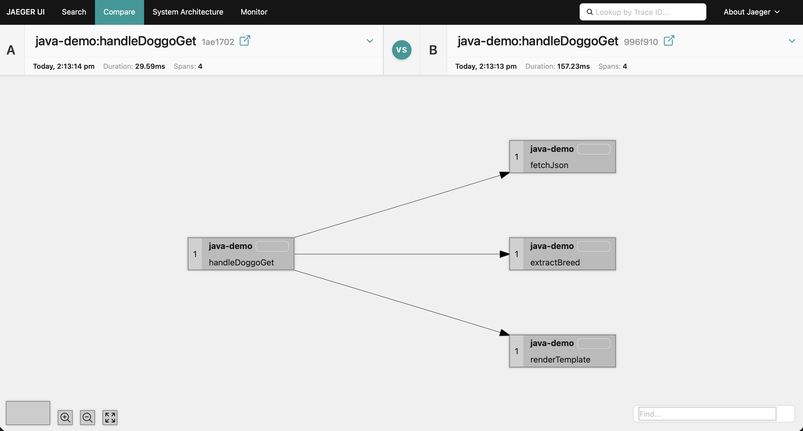
Exploring Jaeger - Why so many visualizations?
Trace data powers both high level insights into relationships between services and low level insights.
It would be overwhelming to show all of that information in one view, and it's the ability to jump between trace comparisons,
span queries, individual attributes on method calls and topology maps that make trace data flexible and powerful.
Exploring Jaeger - Clean up
The next lab keeps using Jaeger, so leave the pod running if you are carrying on. To tear it down
instead, stop the port-forward with CTRL-C and delete the pod:
$ kubectl delete pod jaeger
Lab completed - Results
We reviewed trace visualization and analysis options in the Jaeger UI.
Next up, manually instrumenting metadata on spans.

Contact - are there any questions?
Eric D. Schabell
Technology Advocate Lead
Contact: @ericschabell {@fosstodon.org) or https://www.schabell.org
Technology Advocate Lead
Contact: @ericschabell {@fosstodon.org) or https://www.schabell.org